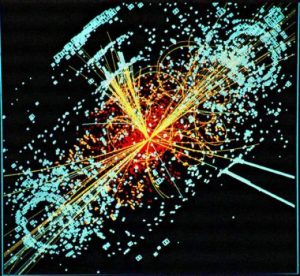

To speak of aesthetics is not simply to consign art to its effects on sensibility, but to open up the configurations of experience that create new modalities of perception and new forms of subjectivity.
“Aesthetics provides a mode of articulation between ways of doing and making, their corresponding forms of visibility, and possible ways of rethinking their relationships.”1 Aesthetic discourse must encapsulate more than sentiment and descriptive rhetoric. The relations between production, action, and transformation can be understood by the aesthetic principle that Jacques Ranciere calls the “distribution of the sensible.” Analyzing sensibility must include a genealogy of the productive forces that shape what is and the manipulative tools included in sensible distributions.
Aesthetic discourse usually acts as a kind of ontology whereby power, politics, and phenomena trace sensible apportionment of being as such. Production and action inscribe violence in their mode of operation because “they shape and recast material that is regarded as passive” but “artwork can be a nonviolent mode of relation, which does not saturate force relations with either creative or restrictive manipulation”2 Although many thinkers have attempted to locate their work around the question of what art is, the aesthetic question is less so one being as determined, and more so one of process, perpetual productions of determinations, and the constant relating of transformative forces.
To render aesthetics capable of anything besides effect on sensibility, one must conceive of art as evental rather than as an object. The objectification of art allows both for its commodification and rationalization. On the contrary, to recognize the labor, or rather the work, in art-work is to recognize art in its performative register. This activation of the aesthetic principle is possible by asking what art does rather than what art is, interrogating the means of distributing sensibility.
Marcuse explains this by stating that “art stands under the law of the given, while transgressing this law.”3 The labor of art seeks what Deleuze calls “a power toward truth,” which seeks to exit the truth of Foucauldian power/knowledge. The evental aesthetic principle “reworks the very parameters within which we make judgements, the optics within which judgments become possible and make sense in the first place.”4 In light of this particular aesthetic paradigm, I will argue that the forms of power that are sensible in the hegemonic order of modern society can only be escaped by a certain kind of aesthetic transformation.
This aesthetic transformation is not one of productive power, but of aphetic non-power that is not inclined to the Marxist desire for collective consciousness. Since the power of collective consciousness requires a form of measure and rationality, rethinking an aesthetic mode of non- power implies escaping techno-rationality by transforming what has exchange value into that which can no longer be evaluated under the principle of exchangeability.
Since there are different definitions of the aesthetic, I must note that Raciere’s “distribution of the sensible” is not the best place to first begin discourse between politics and art. The forces responsible for distribution are not part of the sensible and cannot be demonstrated. Forces only produce effects that are translated into a foreign language, as Nietzsche points out in The Will to Power. Nevertheless, to speak politics is to symptomatically read the effects of force and determine how forces change “what is seen and what can be said about it, who has the ability to see and talent to speak, and the properties of space and possibilities of time.”5
Politics should not be examined by determining forces alone, but forces in relation to their effects, and the distribution of those effects. Historically for critical theorists, the greatest force of art is the force of creativity, or that which is generative of productivity. “In Zarathustra, Nietzsche closely associates the will with self-conscious, self-motivated, and self-disciplined affirmative determination of what is.”6 As Carl Raschke emphasizes, the “will to power is a force that constantly overcomes.” Since it is a “will totruthfulness,” one can see just how Deleuze would call it a power of truth in opposition to a truth of power.
If the will to power is the will to art, and art is about the creation itself and expression of the creator as Raschke points out, determination is a productive exercise in which the subject is constantly re-creating the world. This also means that art is the creation of values, or more particularly, a measure of already influential values. Art is the expression of valuation, the measure of value-creation in lived experience. In a genealogy of this will to power however, it is difficult to determine what creation entails. Generating ideas and the forces behind that generation can never be outside the web of relations from which one is always already embedded.
Understanding the will to power as a productive mode of determination is difficult when existence itself is a testament to Heideggerian “thrown-ness.” If the will to power is a force that overcomes, it must credit its means of overcoming to the language and social fabric that provided the possible conditions of productivity.
The will to truthfulness cannot deny the given and the infinite regression that will inevitably take place in a genealogy of that productive power. There are conceptions of the will to power as a creative force that, when exerted, act upon a canvas comparable to Carl Schmitt’s vast wasteland of America or John Locke’s tabula rasa. These parallel understandings of territory and psychology are not simply wrong, but are dangerous in their denial of an ontological prior. Derrida demonstrated that productive power of thought is always already embedded in a linguistic structure of differance, while other postcolonial thinkers have shown that when Locke claimed “In the beginning, all the world was America,” that he was denying the indigenous form of life in the Americas before the European claim to “discovery.”7
This productive paradigm in the will to power is not confined to a problem with finding a blank canvas upon which to create. There is also the problem of excess production as explored in Walter Benjamin’s seminal essay, The Work of Art in the Age of Mechanical Reproduction. For Benjamin, “Even the most perfect reproduction of a work of art is lacking in one element: its presence in time and space, its unique existence at the place where it happens to be.”8 There is no reproduction that is authentic since a prerequisite to authenticity is the presence of originality. Furthermore, every reproduction is therefore a simulation that moves further from the aura of the original. The question that emerges is what constitutes originality and the aura in representation. In attempts to locate an example of aura, many point to the Mona Lisa as an example.
The original carries the aura while artificial reproductions do not. And yet, the painting as a representation re- presents a human being through a different medium. The aura of originality and authenticity remains in the painting because it is an expression of its creator, Leonardo da Vinci. The painting however, is simulacrum. In re-presenting an original image, the Mona Lisa painting internalizes a difference that separates it from the original “presentation.”
“The simulacrum is not a degraded copy. It harbors a positive power which denies the original and the copy, the model and the reproduction.”9 Also, the Mona Lisa is understood as a priceless painting because of what Benjamin calls its cult value. The insurance or “exhibition” value is inevitable in a world that desires the exchangeability of all things, but the active “cult of remembrance” in the work of art far outweighs its exhibition worth.
Is the Mona Lisa an example of da Vinci’s will to power? Does da Vinci perform a “transvaluation” in his re-presentation of the depicted person? The internalized difference of the simulacrum is the process of mimesis, where “representation through estrangement and subversion of consciousness lends itself to the whole, which bestows upon the elements, their aesthetic meaning and function.”10 Few will deny the mystery, the sense of strangeness in the aura of the Mona Lisa. Herbert Marcuse goes as far as to say that mimesis without the transformative element of estrangement and subversion of consciousness is “anti-art.”11
Other thinkers have claimed reproduction without transformation is “kitsch,” which is often attributed as the focal point of Buadrillard’s famous precession of simulacra. Simulacrum in Platonic trinity that includes model and copy could not have accounted for the capacity of the technological to reproduce work conducive to kitsch art. But in defending his claim of the mimetic, Marcuse is trying to distance himself from the collective consciousness of Marxist aesthetics, echoing Adorno who laments that “The meaning of critique is recognized and legitimated in the social sphere.”12 By claiming that “solidarity would be on weak grounds were it not rooted in the instinctual structure of individuals,”13 Marcuse is attempting to subvert the Marxist narrative of class struggle and collective productionism, but also risks giving the individual the power to internalize difference in any and all possible reproductions.
The performative and the receptive mean that art is never simply an object, but a mimetic technique that “makes art critical in a very special sense. Its significance cannot be formulated into a set of propositions, a worldview or theory. The work of art is to eschew the socially and philosophically acceptable parameters of critique.”14 With this understanding of mimesis and reproducibility, we must consider the will to power to be a certain kind of power, a mimetic power that internalizes and delineates the difference of the simulacrum.
The will to power is the genealogical element of force15, but a force whose symptomatic effects “must depend on transmitted cultural material, just like most things in society. No matter how much art overturns meanings of words and images, the transfiguration is still that of a given material.”16 Despite the materiality of the transfiguration, the impact of art’s internal force field must recognize impressions of form rather than the associations it produces in our mind.17 As Adorno famously says, “Art is a force field,” but while art can be a sign of force, the force of signification lies within the artwork that enacts mimetic power, a power that internalizes difference and produces aura.
If the will to power is never the creative force of mind upon a blank canvas, we must reconsider not only what it means to produce, but the very meaning of power in its productive articulations. Theodor Adorno in Aesthetic Theory, understands the power of art through the negative dialectic. His analysis engages art and society by recognizing that under the law of aesthetic form, the given reality is sublimated, reshaped, and reordered in accordance with the force of art. He claims “The tension between what motivates art and art’s past circumscribes the so-called questions of aesthetic constitution.
Art can be understood only by its laws of movement, not according to any set of invariants.”18 The problem with this particular analysis is that the evolving definition of art is paradigmatically similar to Ernesto Laclau and Chantal Mouffe’s definition of hegemony as a reductive schema of self-familiarity, driven primarily by the internalization of difference.19 It is true that art is a medium of re-presenting reality while at the same time making an accusation against it, but this paradox only questions modes of power/knowledge to internalize difference. To use Schmitt’s language of land, the nomos is defined by the constant process of locating and internalizing the anomie. The law of aesthetics is always confined to the social critique that precedes it and adopted by society as a new valuation upon which power can work/produce.
Hegemony works upon the idea that the people’s love for their own subjection motivates the form of domination prevalent in our modern structures of capitalism. Immaterializing labor generates the hegemonic form of capital that permeates all of society since it “invested workers both at home and in the social space…labor power became another commodity.”20 To render aesthetics under the same law as hegemony is to submit it to a form of power that emphasizes subjection behind every critique of society.
The logic of hegemony is always in service of the powers that are already operative, the momentums of power that influence and complement the decisions of sovereignty. Therefore, anomie is only the language of accusation. Anomie accuses the nomos of a certain kind of homogeny, but hegemonic power can take the difference that accuses and make it part of the power momentum. It is often said that what does not kill you makes you stronger, and for power, accusations that do not kill it only contribute to its flexibility and reach. “Power has flexible circuits that can absorb even forms of resistance and challenge to power structures and can rearticulate them as sites of a further magnification of power.” If hegemonic and aesthetic law therefore consist of a kind of power that works upon the internalization of difference, we must interrogate the not the force of such power, but the medium through which the effects of force come to fruition.
The effects of power are always materialized through production, commodification, and objectification. More specifically, globalization implies the standardization and informationalization of all “territory” that it might be measured, controlled, and distributed. For Nietszche, the will to power is the bringing into being and determination of what is, but in our informational age, “ it is technicity that characterizes the tendency toward equalization of difference, exchangeability, and convertibility; it seeks to digitize everything and turn being into a global, commodified, continuously expandable data bank.”21 In order to territorialize power, hegemony must simulate, since simulation designates the power of producing a measurable effect.
Simulation or simulacra subordinates the image to resemblance, but as Deleuze points out, the process of simulation is different from the process of artificiality. “They are even opposed to each other. The artificial is always the copy of a copy, which should be pushed to the point where it changes its nature and is reversed into the simulacrum.”22 Artificiality produces kitsch art, but it can no longer be kitsch or artificial once a difference is internalized and generates aura. The process of simulation in the modern age is marked by technicity’s mode of production: “The technic constitution of being finds its most powerful expression not in information technology but in underlying determination of being as intrinsically informatizable- the electronic incarnation of “essence” as information.”23 A modern reading of Nietzsche’s concept of the will to power must inevitably recognize that the overcoming productive power is the overcoming of old information with the new. In its highest form, cognitive overcoming is what Thomas Kuhn calls a paradigm shift.
Is not art and the aesthetic also subject to the technic mode of production? If this is so, art is not simply “value creation,” but the informationalization of these values. Values are registered on a techno- rational level, as are all other determinations. The will to power as a creative force cannot escapes the dialectic of power. Even powerlessness, which is measured in relation to power, does not escape the constitutive modes of productive power and function with a teleology of power. Powerlessness functions to overturn power, not to abolish it.
The only aesthetic principle that can save us from a hegemonic order is the one that works outside of the power dialectic. Adorno’s negative dialectics in Aesthetic Theory work on the critique of power, but only to contribute to different power momentums in society. An aesthetic soteriology, a salvific aesthetics, must posit the “disarticulation of the very paradigm of production as the formative force of our globalized and informational world.”24 This disarticulation is what Krzysztof Ziarek calls aphesis, derived from the technical term in linguistics meaning the removal of an unstressed vowel at the start of a word. The aphetic is a transformative force rather than a productive force. Neither does it inscribe violence, nor does it seek to overturn power as most political revolutions do.
Aphesis is opposed to the technic, because while the technic is the modern way of making “art about the artist, about creation itself and its expression through the creator,”25 aphesis disrupts the creator’s sense of control over the work. To posit an evental and aphetic aesthetic principle “changes the mode of relating, drawing things together, no longer giving being the momentum of power… it thinks difference on the model of poiesis, not as making or producing, but as letting be.”26 This “letting be” is better understood as “enabling,” since enabling is not passive or contemplative but instead participatory and transformative.
The aphetic is not synonymous with powerlessness since powerlessness is only conceivable in terms of power, namely by its absence and in recognition, its redistribution. Like the way anti-production is just a deficient mode of production the work of Deleuze and Guattari, powerlessness is simply a deficient mode of power. There is no purity of non-power, since the aphetic works out of and from previously constituted and produced matter. The will to power must precede the “will to non-power.” The aphetic is post-colonial, and recognizes the history of coloniality as the antecedent from which “enabling” begins. More specifically, what precedes the aphetic is technicity, the form of productive (will to) power that is defined by violence, measure, and techno-rational information. The creative action as an instance of power precedes enabling aphesis.
Ziarek gives the example of Helikopter-Streichquartett (Helicopter String Quartet), a musical composition from Karlheinz Stockhausen. Stockhausen uses four helicopters and the sound of their rotors in motion to compose a harmonious rhythm in his piece. In doing this, the function of the helicopter, its technicity, is transformed. The rotors, which were not produced by the composer, take on another function through non- violent, aphetic transmutation. The cost of the helicopters, the tickets to the composition performance- these can be measured. But the creative force of enabling from Stockhausen cannot be measured in terms of power, especially techno-rational measurements of power. The effects of this aphetic force cannot be informationalized, digitized, and distributed easily within the modern forms of technic power.
Stockhausen’s enablement can be spatially understood through the language of proximity. “Proximity becomes an alternative manner of disposing and constellating forces into relations that do not follow the principle of identity and difference; it is beyond calculation and thus of information, programming, and transmission, beyond the flexible operations of power.”27 Proximity is the same kind of spatial language that Homi Bhabha uses when he speaks of an interstitial and transitory intimacy that questions binary divisions through which such spheres of social experience are often spatially opposed.28 Levinas describes the “twilight existence of the aesthetic image- art’s image as the very event of obscuring, a decent into the night, an invasion of the shadow.”29
Between Levinas, Bhabha, and Ziarek, constitutive language vacillates between aesthetics, subjectivity, and politics. And while each permeates the other, it is a differential aesthetic force- the difference between the technic and the aphetic- that constitutes the modes of becoming which manifest in self-reflective subjectivity and politics. A world of intervals, in-betweens, interludes, and distances elude calculative logic and linear progression, and therefore resist the exchangeability of hegemony. Since the hegemonic order requires techno-rationality upon which to exercise its self-familiarizing desiring machinery, resistance and salvation must emerge from aphesis. It is not the creative, but the transformative force of the will to nonpower.
While artists see the paradox of art as its ability to both represent society and critique it simultaneously, the true subversive element is in the aesthetic principle of undoing the will to power that makes identitarian and essentialist subjectivity possible. The transformative mode of nonpower is the undoing, the disarticulation, and most importantly the interrogation of essentialist subjectivity. Contrary to opposing forms of power that often reify and confirm already held bias through reactionary response and powerlessness simply produces a mode of power-ful resentment, nonpower is able to give new life to that which already is. Enabling as an operative mode is still determinative in the way being is shaped and given form.
The difference is that relations are no longer simply interactive, but what feminist physicist Karen Barad calls intra-active. While the prefix -inter means “among or in the midst of,” the prefix -intra means “from within.” The aphetic transforms independent things in ways that give them a new function, a function not originally intended. Intra-action occurs because the aphetic force of enabling allows two elements to work in co-constitutive ways. Technicity, production, and other violent modes of production can easily take several elements and combine them in an interdependent process. But only the transformative mode of aphetic nonpower can register on the level of intra-dependence, in which the independence of former elements cannot be traced in the “work” or “performance” of the object. Intra-action and intra-dependence only work within the parameters of “evental” aesthetics, the labor of art-work.
I recognize that in calling for an aesthetic soteriology, that I am calling for a doctrine of aesthetic salvation. While I hold that the enabling, power-free valence of aesthetics can save us from the type of will to power and production that lends itself to exchangeability and hegemonic order, the antinomy is in the fact that doctrine is a set of beliefs, values, and dogma informationalized. Doctrine necessarily follows disembedded, or deterritorialized ideas. In unfamiliar contexts, coding the sacred, the created, and the transformed means making it accessible to those who can only grasp it on a cognitive level. In order to proselytize, or to at least postulate a universal argument, one needs to “doctrinize.”
In doctrine, values are measured and standardized; beliefs are oriented in a techno-rational universality. So, while aphesis and nonpower maintain the purpose of frustrating the mode of productive power and the modern form of that productive power in techno-rationality, the force-work of aesthetics as shared can be universalized and made “doctrine.” The antinomy allows us to recognize with rationality and informationalization just how aphesis transforms, but does not use that same rationality in the event of transformation itself.
With the language of doctrine, religion is inevitably a factor in the question of aesthetic soteriology. And while the sacramental- the bestowal of the Eucharist in particular- represented the enabling and aphetic transformation of the given, the institutionalization of the liturgy and gnosis as the means of salvation robbed the aesthetic of its nonpower. The sacramental is imbued with the violent inscription of power once the transformation is made doctrinal and since it can no longer “exceed and revise the parameters of power,” it is no longer salvific.30
The techno-rationality that orders values and “distributes the sensible” is the kind of knowledge that is detrimental to our escape from hegemony. Rather than the will to power, which is the productive force that inscribes violence through techno-rational knowledge, we need to look toward enabling a power-free “turn in technicity that disarticulates power itself.”31
The goal of an aesthetic soteriology is to save the subject from the hegemonic order of techno-rationality. For this to happen, we must open up the configurations of experience that create new modalities of perception and new forms of subjectivity through aphesis, an “enabling” mode of non-power that challenges our current technic determinations and interrogates the distributive operations of the sensible.
Mason Davis is a graduate student in religious studies at the University of Denver. He currently works for Academic Impressions, a training and design company for higher education based in Colorado.
_______________________________________________________________________
1 Jaques Ranciere, The Politics of Aesthetics (London: Bloomsbury Academic, 2000), 10.
2 Krzysztof Ziarek, The Force of Art (Stanford CA: Stanford University Press, 2004), 9.
3 Herbert Marcuse, The Aesthetic Dimension: Toward a Critique of Marxist Aesthetics (Boston: Beacon Press, 1978) 11.
4 The Force of Art. 28.
5 The Politics of Aesthetics. 22.
6 Carl Raschke, Force of God: Political Theology and the Crisis of Liberal Democracy (New York: Columbia University Press, 2015), 42.
7 John Locke, Second Treatise of Government, in The Selected Political Writings of John Locke, ed. Paul E. Sigmund(New York: Norton, 2005), sec. 25.7.
8 Walter Benjamin, The Work of Art in the Age of Technical Reproduction (Scottsdale AZ: Prism Key Press, 2010), 13.
9 Gilles Deleuze, The Logic of Sense. New York: Columbia University Press, 1969), 262.
10 The Aesthetic Dimension, 45-46.
11 Ibid. 33.
12 Theodor Adorno, Aesthetic Theory (London: Bloomsbury Academic, 1970) 54.
13 Ibid.
14 The Force of Art. 43.
15 Carl Raschke quoting Gilles Deleuze, Force of God, 44.
16 The Aesthetic Dimension, 41.
17 The Force of Art. 48.
18 Aesthetic Theory, 7.
19 See Laclau and Mouffe , Hegemony and Socialist Strategy: Towards a Radical Democratic Politics (New York: Verso, 2001).
20 Jean Baudrillard The Agony of Power (Los Angeles: Semiotext(e), 2010), 16.
21 The Force of Art, 64.
22 Gilles Deleuze (1969). The Logic of Sense. New York: Columbia University Press 265.
23 The Force of Art, 78.
24 Ibid. 68.
25 Force of God, 43.
26 The Force of Art, 140.
27 Ibid. 157.
28 See Bhabha, Homi. The Location of Culture. London: Routledge, 2010.
29 Bhabha, H. quoting Levinas , The Location of Culture, 21.
31 The Force of Art, 197.